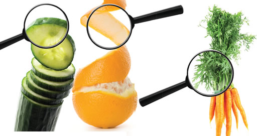

Aproveitar partes não convencionais de alimentos é uma excelente maneira de reduzir o desperdício, economizar dinheiro e descobrir novos sabores e texturas. Muitas partes de vegetais, frutas e outros alimentos que geralmente descartamos são comestíveis e nutritivas. Aqui estão algumas dicas para aproveitar essas partes não convencionais:
Cascas de Frutas e Legumes
- Cascas de batata, cenoura e abóbora: Lave bem e asse para fazer chips ou adicione-as a sopas e caldos para extrair seu sabor e nutrientes.
- Cascas de frutas cítricas: Use para fazer raspas e adicionar sabor a bolos, cookies e molhos. Elas também podem ser cristalizadas ou usadas para fazer chás.
Talos e Folhas
- Talos de brócolis e couve-flor: Podem ser picados e adicionados a sopas, refogados ou até mesmo transformados em pesto.
- Folhas de cenoura e beterraba: Excelentes para saladas, pestos ou como um substituto para a salsinha em várias receitas.
Sementes e Caroços
- Sementes de abóbora e melão: Lave, tempere e asse para um snack crocante.
- Caroço de abacate: Pode ser ralado para fazer um chá ou utilizado para extrair nutrientes em smoothies (certifique-se de triturá-lo bem).
Partes de Carnes e Peixes
- Ossos de carne: Use para fazer caldos ricos e nutritivos.
- Cabeças e espinhas de peixes: Excelentes para caldos e sopas, oferecendo um sabor intenso e nutrientes como o ômega-3.
Sobras de Vegetais
- Cascas e talos: Faça um caldo de legumes caseiro cozinhando lentamente essas partes em água. Esse caldo pode ser a base para sopas, risotos e molhos.
Dicas Gerais
- Compostagem: Para o que realmente não puder ser aproveitado na cozinha, considere a compostagem, transformando resíduos orgânicos em adubo para plantas.
- Pesquise receitas: Muitas culturas ao redor do mundo têm tradições de usar todas as partes dos alimentos. Busque inspiração em receitas de diferentes países.
- Conservação: Algumas partes não convencionais de alimentos podem ser conservadas em vinagre, açúcar ou sal para prolongar sua vida útil e adicionar sabor a outras preparações.
Aproveitar completamente os alimentos não apenas beneficia o meio ambiente, reduzindo o desperdício, mas também enriquece nossa dieta com uma maior variedade de nutrientes e sabores. É uma abordagem criativa na cozinha que incentiva a experimentação e o respeito pelos recursos que temos.